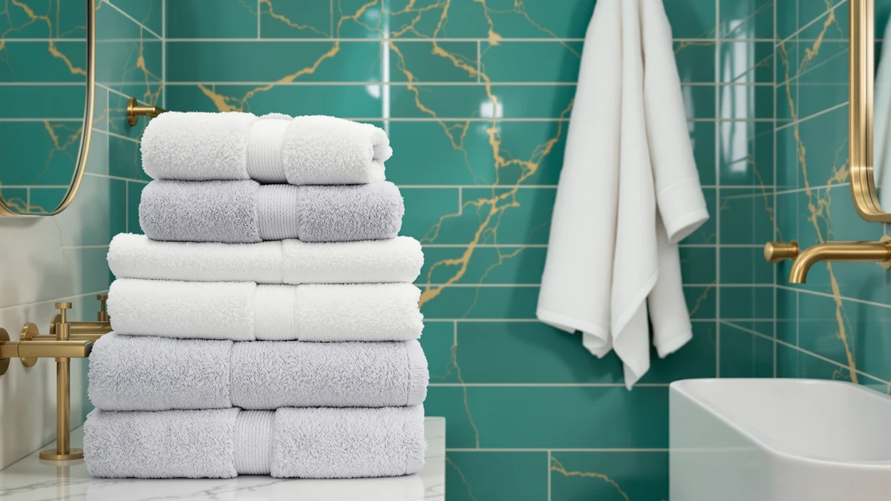

Best Bath Towel vs Bath Sheet (2026) | Best Bath Towels
Prices and picks verified as of August 2026. Independent, reader-supported reviews.


Things to Know Before You Buy
- Size is the whole story. A standard bath towel runs about 27 by 52 inches, while a bath sheet stretches to roughly 35 by 60 inches or more, giving you around 40 percent extra fabric.
- Bath sheets cost more per piece. You pay for the extra cotton, and a two-pack of sheets often lands where a four-pack of towels would.
- Drying and laundry differ. A bath towel dries on the bar overnight and fits several to a wash load, while a bath sheet stays damp longer and eats up dryer space.
- Your bathroom size matters. A small bathroom with one towel bar suits a bath towel, and a large bathroom with a linen closet can absorb the bulk of sheets.
- Height plays a role. If you are over six feet or like full coverage, a bath sheet wraps you completely where a towel comes up short.
The bath towel vs bath sheet question comes down to one number: size. A standard bath towel measures about 27 by 52 inches, while a bath sheet stretches to roughly 35 by 60 inches or larger, and that extra fabric changes how you dry off, how much you spend, and how fast your linen closet fills up. You almost certainly own bath towels already, so the real decision is whether the jump to a sheet earns its shelf space in your home.
We put the two formats side by side on build, price, and daily use. Both wrap you in cotton after a shower, yet they suit different bodies and different bathrooms, and the sections that follow show where each one pulls ahead.
Quick Answer
Choose a bath towel if you want quick drying, easy storage, and a lower price per piece, since it handles daily use for most people without fuss. Choose a bath sheet if you are tall, prefer to wrap your whole body, or want a plush spa feel, and you have the closet space and dryer capacity for the extra bulk. Neither one wins the bath towel vs bath sheet matchup outright, so match the size to your body and your bathroom rather than chasing a single "best."
What is Bath Towel?
A bath towel is the standard piece you probably grew up with, sized around 27 by 52 inches. It covers an average adult from chest to knee and handles everything from drying off after a shower to wrapping wet hair. In the bath towel vs bath sheet lineup, the towel is the everyday workhorse, and you likely have a stack of them in the closet right now.
You will find bath towels in cotton, Turkish cotton, and blends, with weights measured in grams per square meter (GSM). A 500 to 600 GSM towel gives you a soft, absorbent feel without turning into a heavy brick when wet. Because the towel carries less fabric than a sheet, it dries on the bar overnight, fits several to a laundry load, and stores flat on a single shelf.
The trade-off shows up if you are tall or like to wrap your whole body. A bath towel can leave your shins exposed or ride up when you tuck it, and that limit is the exact gap a bath sheet fills. For most bathrooms and most mornings, though, a standard towel handles everything you need. You can dig deeper in our bath towel buying guide.
What is Bath Sheet?
A bath sheet is the larger cousin of the bath towel, sized around 35 by 60 inches and sometimes bigger. That extra width and length give you roughly 40 percent more fabric, enough to wrap your full body with room to tuck and still cover your legs. When people weigh a bath towel vs bath sheet, the sheet is the option they reach for when they want that hotel-robe feeling at home.
Sheets use the same materials as towels, from combed cotton to Turkish cotton, so the feel depends on the GSM rather than the format. The difference you notice is coverage. You can wrap a sheet around your chest and it reaches past your knees, or drape it over your shoulders like a shawl while you get ready. Taller users and anyone who dislikes a skimpy tuck tend to prefer them.
All that fabric comes with real costs. A bath sheet weighs more when wet, stays damp longer on the bar, and takes up more room in both the dryer and the closet. It also costs more per piece than a comparable towel. Our organic bath sheet picks show how the format looks across price points.
Head-to-Head: Build Quality & Durability
On build quality, the bath towel vs bath sheet gap is smaller than the price tags suggest, because both formats rise or fall on the same factors: fiber quality, GSM, and stitching. A well-made 600 GSM towel and a well-made 600 GSM sheet use the same cotton and the same double-turned hems, so they wear at a similar rate when you treat them well. The format does not make one stronger than the other.
Where durability splits is in how each one behaves in the wash. A bath sheet holds more water, so it hits the drum heavier and spins harder, which puts a bit more stress on the seams over hundreds of cycles. A bath towel dries faster between uses, and that shorter damp time slows the mildew and odor that break fibers down early. If you run hot cycles or overload the dryer, the bigger sheet shows wear at the edges sooner.
You control most of that outcome yourself. Wash cold, skip fabric softener, and dry on low, and both a bath towel and a bath sheet last for years. Our guide on keeping towels soft covers the habits that stretch that lifespan.
Head-to-Head: Price & Value
Price is where the bath towel vs bath sheet decision gets practical. You pay for cotton by the ounce, and a sheet carries far more of it, so a two-pack of bath sheets often costs what a four-pack of bath towels would. The Utopia Towels two-pack of sheets runs about $25.99, while a comparable set of standard towels covers more pieces for similar money. Buy for a whole family and that gap adds up fast.
Value depends on how you use them. If you want maximum coverage and buy a couple of sheets for the adults in the house, the premium is easy to justify. If you need to stock a guest bath, a gym bag, and a beach day, the lower per-piece cost of bath towels stretches your budget further. Weigh the coverage you actually want against how many pieces you need.
Head-to-Head: Use Experience
Day to day, the bath towel vs bath sheet difference shows up in three moments: stepping out of the shower, hanging the piece to dry, and doing laundry. A bath sheet wins the first moment. You wrap it once and it stays put, covers your legs, and feels like the towel at a nice hotel. If you value that plush, wrapped-up feeling, the sheet delivers it every morning.
The towel wins the next two moments. A bath towel fits a standard towel bar without bunching, and it dries overnight so it is ready for tomorrow. A bath sheet often overhangs the bar, dries slower, and can turn musty in a humid bathroom that lacks good airflow. Come laundry day, you fit several towels in one load, while a couple of sheets fill the drum and hog the dryer.
Storage rounds it out. Folded bath towels stack neat on a single shelf, and folded bath sheets take noticeably more room. If your bathroom is small or short on ventilation, the towel simply fits your life better. If you have a linen closet and a roomy dryer, the sheet's downsides shrink and its comfort takes over.
When to Choose Bath Towel
Reach for a bath towel when your bathroom is small, your budget is tight, or you want low-maintenance drying. In the bath towel vs bath sheet split, the towel is the smart default for a single towel bar, a shared family closet, or a humid room where fast drying keeps mildew away. You also want towels when you need many pieces at once, since the lower price per towel stocks a guest bath, a gym bag, and a kids' bathroom without straining your wallet. If you are average height and a standard wrap already covers you, the extra fabric of a sheet buys you comfort you may not miss. Start here unless you have a specific reason to size up, and browse our bath towels under $30 for solid everyday options.
When to Choose Bath Sheet
Choose a bath sheet when coverage and comfort matter more than closet space or price. In the bath towel vs bath sheet decision, the sheet is the pick if you stand over six feet, carry a larger frame, or simply dislike a tight tuck that keeps slipping. You also want a sheet when you crave that spa or hotel feeling, wrapping up head to knee while you get ready. A bath sheet suits a larger bathroom with a heated rack or a proper linen closet, and a dryer with room to spare so the extra fabric dries fully. Buy a couple for the adults in the house and keep towels on hand for kids and guests. Our bath sheets under $30 show how far a modest budget goes on the larger format.
Our Top Picks
Once you have settled the bath towel vs bath sheet question for your own bathroom, these three picks give you a solid starting point at each end of the range, from a plush sheet upgrade to a family-friendly value set.

Editor’s Pick
Utopia Towels Bath Sheets 2
If you want to feel the bath sheet difference, this two-pack of oversized cotton sheets wraps you head to knee with plush, hotel-style coverage.
$25.99
Check Price on Amazon
Best Value
RIVERSIDE Pack of 2 Extra
A two-pack of extra-large cotton sheets that gives you full-body coverage at a friendlier price, the value play if you want sheet size without the premium.
$37.99
Check Price on Amazon
Premium Choice
ORIGINAL KIDS Hooded Bath Towel
For the kids in the house, a hooded towel at standard size proves that a full bath sheet is overkill for smaller bodies, and it dries fast between baths.
$16.99
Check Price on AmazonWhat is the difference between a bath towel and a bath sheet?
The difference in the bath towel vs bath sheet comparison is size.
Is a bath sheet worth it over a regular bath towel?
A bath sheet is worth it if you are tall, like to wrap your full body, or want a plush spa feel, and you have the closet space and dryer capacity to handle the bulk.
Frequently Asked Questions
What is the difference between a bath towel and a bath sheet?
Is a bath sheet worth it over a regular bath towel?
Do bath sheets dry slower than bath towels?
Will a bath sheet fit a standard towel bar?
Which should I buy for a small bathroom?
Final Verdict
The bath towel vs bath sheet choice comes down to your body, your bathroom, and your budget rather than one format beating the other. Pick a bath towel for fast drying, easy storage, and a low price per piece, and pick a bath sheet when you want full-body coverage and a plush, wrapped-up feel. If you decide the extra fabric is worth it, the Utopia Towels bath sheet two-pack is the easiest place to start, and if you would rather keep things simple, a good standard towel will serve you for years.